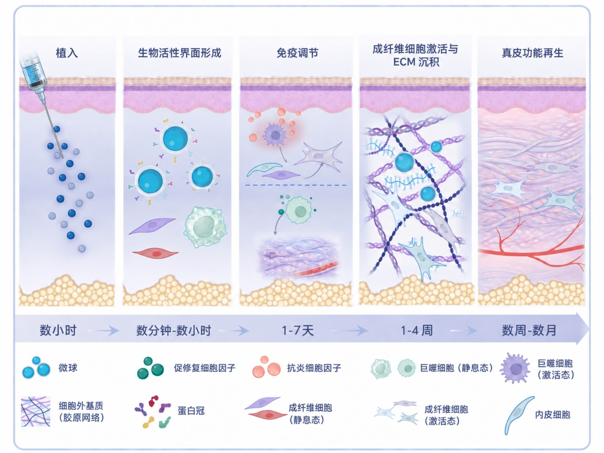
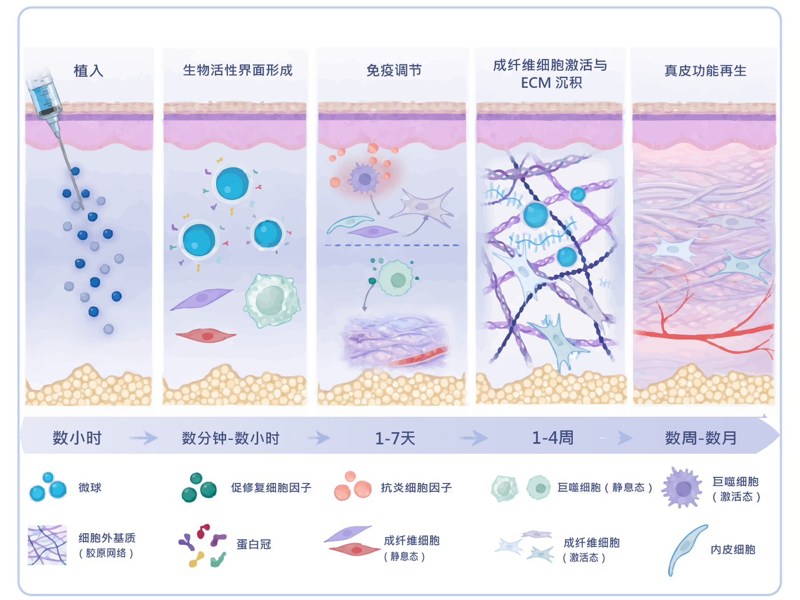
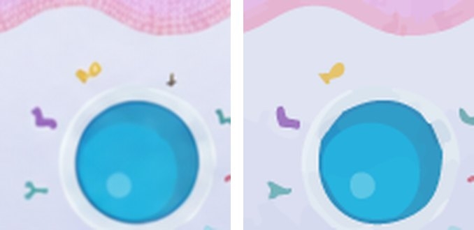
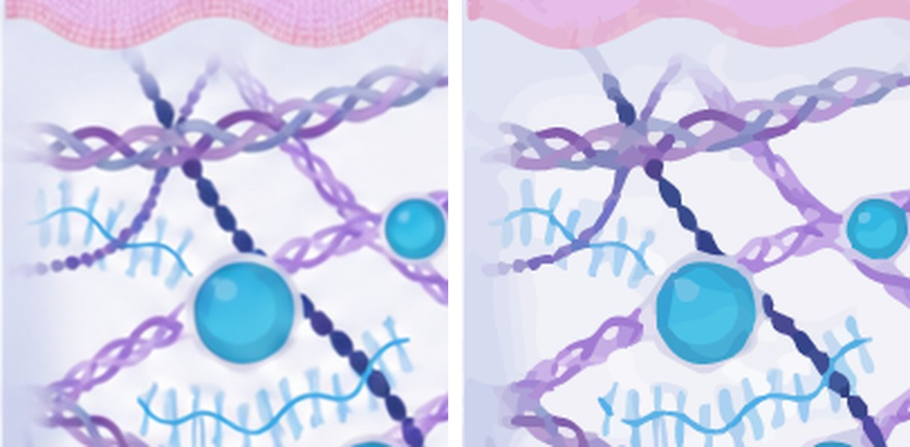
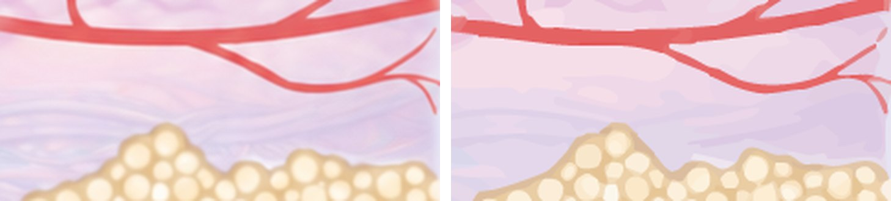
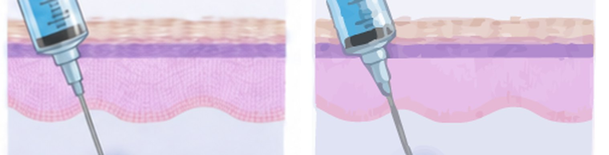

项目简介
原图是一张用于科普展示的“微球作用机制图”：从左到右讲述微球植入皮肤后，经历生物活性界面形成、免疫调节、成纤维细胞激活与 ECM 沉积，最终实现真皮功能再生的五个阶段，底部配时间轴与图例。它细节丰富，但不是矢量——放大就模糊，也无法按元素修改。
读图与测量
真实查看原图，量出 5 个面板、时间轴、图例与文字的像素边界与配色。
对象计划
写清每个元素的独立编辑方式、遮挡关系与层序，形成 scene.json 清单。
文字校准
在 Illustrator 实测文字框边界，迭代校正字号与水平缩放，贴合原图墨迹。
构建与 QA
保存 AI、导出 SVG/PNG、重开验证可编辑性；跑结构、文字、图层完整性与目视复核。
输入 / 输出对比
左边是输入（ChatGPT 生成的手绘位图），右边是输出（Illustrator 导出的矢量渲染）。整体构图、配色、遮挡关系忠实保留；差异集中在原图手绘笔触的纹理密度上。


每个元素是怎么画上去的
矢量工程按“底 → 顶”的语义层序组织。点击播放，可看到从外框开始，五个机理面板、时间轴、箭头、图例与文字依次“绘制”上去——这正是 Illustrator 里的真实图层顺序。
修改过程：从毛坯到交付
这不是一次成型的。中间经历了文字重影、色块缺口与锚点冗余三类问题，逐一解决。下面是几个关键里程碑。
关键细节复核
按“文字清晰 > 元素完整光滑 > 排版 > 色块”的优先级逐处放大检查。左为参考，右为矢量成品。




文字与工程指标
文字是最高优先级：25 条标签全部是真实 TextFrame，可在 Illustrator / SVG 中直接编辑内容与字号；并排除了描摹层混入原图文字抗锯齿边缘造成的“重影”。
| 指标 | 数值 | 说明 |
|---|---|---|
| 图层 | 12 | 背景 / 外框 / 5 面板 / 时间轴带 / 箭头 / 2 行图例 / 文字 |
| 真实文字 | 25 | 标题 5、时间轴 5、图例 15，均为可编辑 TextFrame |
| 矢量路径 | 4423 | Image Trace 展开后命名、分组、清理 |
| 位图 / 链接对象 | 0 | 最终 AI 中 RasterItem、PlacedItem 均为 0 |
| 锚点精简 | −33% | 53751 → 35771，靠 path/noise fidelity 收敛 |
| 整图相似度 | SSIM 0.93 | 12 个关键区域全部达标 |
| 字体 | Microsoft JhengHei Bold | 按墨迹高度与宽度匹配，SVG 内嵌字体子集 |
下载工程文件
可下载最终可编辑工程与参考文件，用于学习或二次修改。文字保留为真实文本；SVG 已内嵌字体子集，跨设备打开文字不丢。